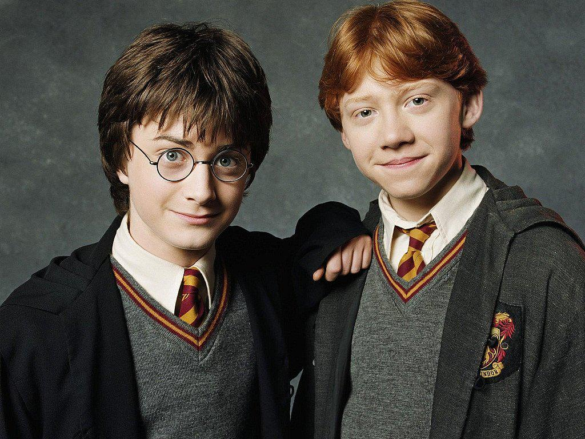
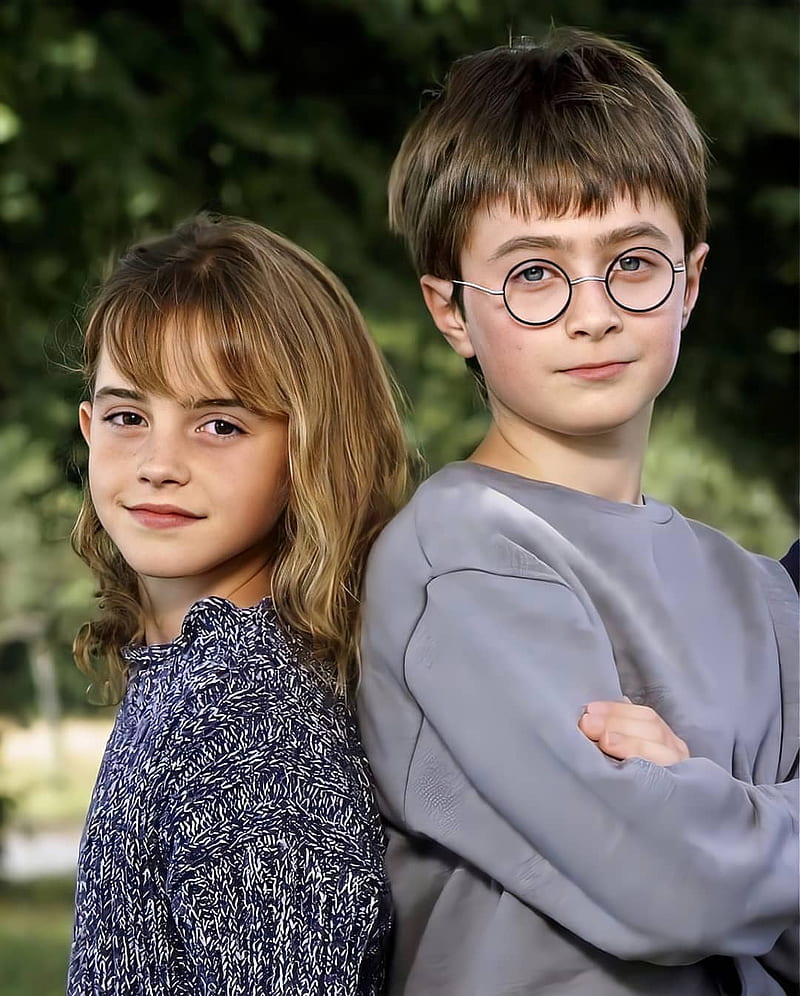

Harry Potter is a series of seven fantasy novels written by British author J. K. Rowling. The novels chronicle the lives of a young wizard, Harry Potter, and his friends Hermione Granger and Ron Weasley, all of whom are students at Hogwarts School of Witchcraft and Wizardry.
The main story arc concerns Harry's conflict with Lord Voldemort, a dark wizard who intends to become immortal, overthrow the wizard governing body known as the Ministry of Magic, and subjugate all wizards and Muggles (non-magical people).
The series was originally published in English by Bloomsbury in the United Kingdom and Scholastic Press in the United States. A series of many genres, including fantasy, drama, coming-of-age fiction, and the British school story (which includes elements of mystery, thriller, adventure, horror, and romance), the world of Harry Potter explores numerous themes and includes many cultural meanings and references.
Major themes in the series include prejudice, corruption, madness, and death. Since the release of the first novel, Harry Potter and the Philosopher's Stone, on 26 June 1997, the books have found immense popularity, positive reviews, and commercial success worldwide.
They have attracted a wide adult audience as well as younger readers, and are widely considered cornerstones of modern literature. As of February 2023, the books have sold more than 600 million copies worldwide, making them the best-selling book series in history, and have been available in 85 languages.
The last four books consecutively set records as the fastest-selling books in history, with the final instalment selling roughly 2.7 million copies in the United Kingdom and 8.3 million copies in the United States within twenty-four hours of its release.
The original seven books were adapted into an eight-part namesake film series by Warner Bros. Pictures. In 2016, the total value of the Harry Potter franchise was estimated at $25 billion, making Harry Potter one of the highest-grossing media franchises of all time. Harry Potter and the Cursed Child is a play based on a story co-written by Rowling.
The success of the books and films has allowed the Harry Potter franchise to expand with numerous derivative works, a travelling exhibition that premiered in Chicago in 2009, a studio tour in London that opened in 2012, a digital platform on which J. K. Rowling updates the series with new information and insight, and a trilogy of spin-off films premiering in November 2016 with Fantastic Beasts and Where to Find Them, among many other developments.
Themed attractions, collectively known as The Wizarding World of Harry Potter, have been built at several Universal Destinations & Experiences amusement parks around the world.
The series follows the life of a boy named Harry Potter. In the first book, Harry Potter and the Philosopher's Stone, Harry lives in a cupboard under the stairs in the house of the Dursleys, his aunt, uncle and cousin, who all treat him poorly. At the age of 11, Harry discovers that he is a wizard. He meets a half-giant named Hagrid who gives him a letter of acceptance to attend the Hogwarts School of Witchcraft and Wizardry.
 